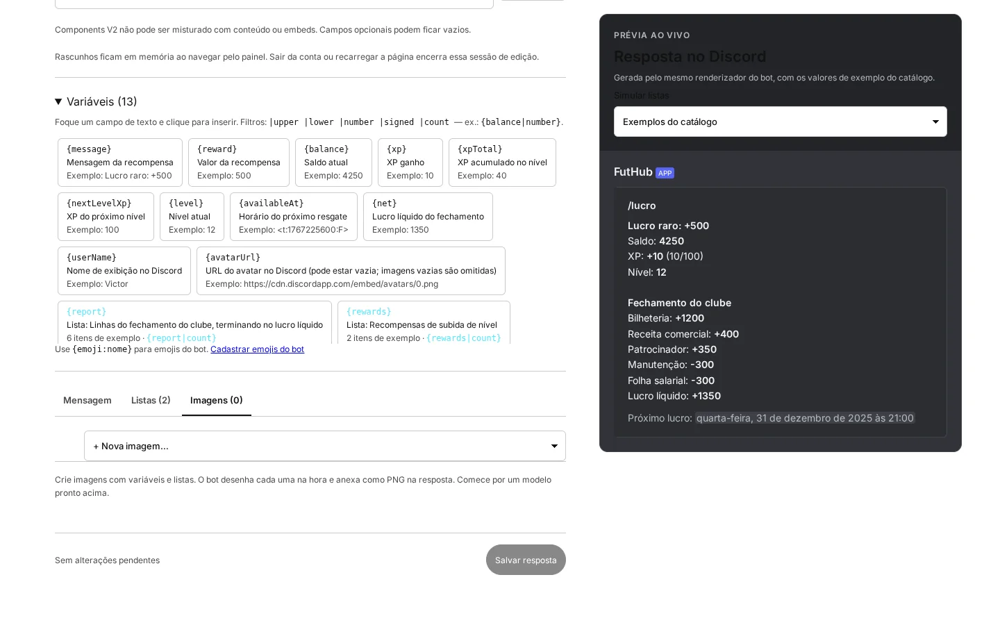
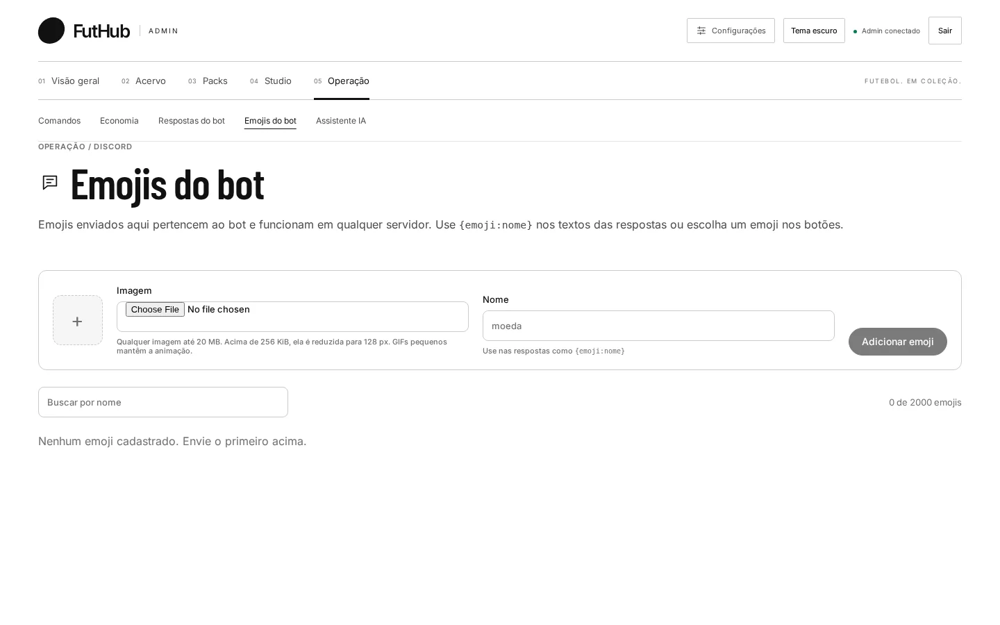

lucro, resultado “Lucro resgatado”, com a prévia ao vivo.O que faz
Variáveis, listas e imagens.
13 campos dinâmicos
Clique para inserir. Os campos aceitam filtros como upper, number e signed.
Relatórios em linhas
{report} monta o fechamento do clube (bilheteria, receita, patrocínio, manutenção e folha) e {rewards} lista as recompensas de subida de nível. Há presets de marcadores, numerada, cartão, citação e subtexto.
Legado ou Components V2
Use conteúdo, até 10 embeds e botões, ou os blocos do Discord Components V2: texto, mídia, separador e container. “Usar padrão” volta ao texto original.
Imagens desenhadas na hora
Crie imagens com variáveis e listas. O bot desenha cada uma no momento da resposta e anexa como PNG. O editor tem camadas arrastáveis de texto, retângulo, imagem e barra de progresso.
- Até 4 imagens por resposta
- Simule listas de exemplo, vazias ou com 12 itens

Emojis do próprio bot
Envie emojis que pertencem ao bot e funcionam em qualquer servidor. Imagens de até 20 MB são reduzidas para 128 px, e GIFs pequenos continuam animados. Use {emoji:nome} nos textos ou escolha um emoji para os botões.
